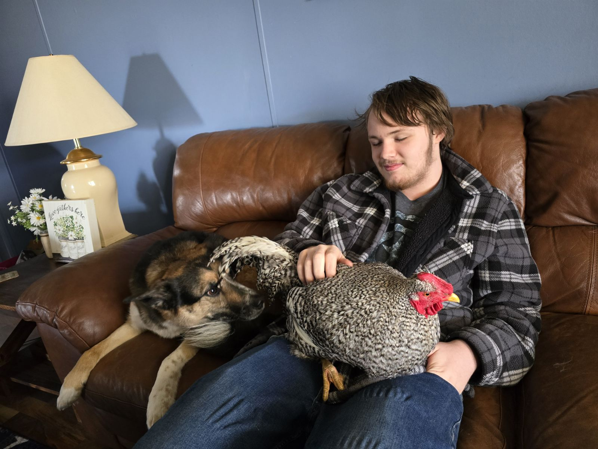

My name is Xander Starnes. I am 17 years old and a senior at Martinsville High School (3.8/4.0 GPA). While in high school I have been taking many computer science related classes such as Computer Repair, Principles of Computing, Robotics, Computer Science, and more. I am also in Honors English and Math classes.
During the summer of 2024 I was an intern in the Nextech Catapult program where I continued developing my skills in coding and website development. As a senior I will be exploring Networking and Cybersecurity, Software Development, and more Website Development. After graduation I plan to attend college and continue to grow my skills in Computer Science and Information Technology. Seeking a role as part of an IT team.